01钩子 / 问题
用剧情成品吸引，再给出三小时零代码承诺
开场先抛出‘被大厂优化后和算法在一起’的剧情梗，展示乙女文游成品，再声明只用三小时、零代码，并承诺提供提示词模板。
通过配置可行动的编程 Agent、用自然语言描述世界观和玩法，再提供美术资产与修改意见，非开发者也能完成可玩的文字游戏。
这是一条111秒的完整项目教程，价值深度高于普通短教程，却把安装、API、框架、文案、美术、布局和模板领取全部放进一条视频。它代表中位层常见问题：内容有料，但首个成果回报与关键步骤之间间隔过长。
通过配置可行动的编程 Agent、用自然语言描述世界观和玩法，再提供美术资产与修改意见，非开发者也能完成可玩的文字游戏。
不是复述内容，而是标出每一段承担的叙事任务、观众问题和画面证据。
开场先抛出‘被大厂优化后和算法在一起’的剧情梗，展示乙女文游成品，再声明只用三小时、零代码，并承诺提供提示词模板。
教程进入 Claude Code/Kimi 的安装和 API 获取。这部分是必要门槛，但占据约四分之一时长，且自动字幕中的工具名需要复核。
作者把世界观、主角、剧情、玩法和数值写进需求，Agent 很快生成以被裁女工都市生存为主题的游戏框架和男性角色。
文字与逻辑完成后，她把自己生成的角色图放入文件夹，再让 Agent 自动寻找并放到游戏对应位置。
打开预览验证对话自然度和生活气息，随后对布局不满意，再用自然语言要求 Agent 重跑代码并交付新版。
结尾把方法扩展到职场、古风和悬疑题材，强调不懂开发也能制作，最后引导观众索取文档。
下列章节覆盖视频的主要论点、步骤与结果；每段都保留时间码和关键画面。
开场先抛出‘被大厂优化后和算法在一起’的剧情梗，展示乙女文游成品，再声明只用三小时、零代码，并承诺提供提示词模板。
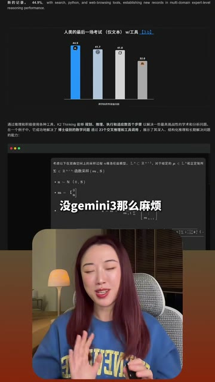
教程进入 Claude Code/Kimi 的安装和 API 获取。这部分是必要门槛，但占据约四分之一时长，且自动字幕中的工具名需要复核。
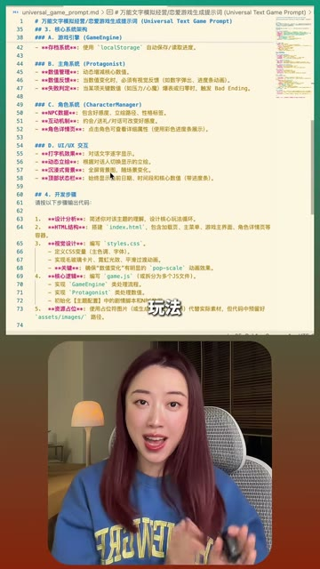
作者把世界观、主角、剧情、玩法和数值写进需求，Agent 很快生成以被裁女工都市生存为主题的游戏框架和男性角色。
文字与逻辑完成后，她把自己生成的角色图放入文件夹，再让 Agent 自动寻找并放到游戏对应位置。
打开预览验证对话自然度和生活气息，随后对布局不满意，再用自然语言要求 Agent 重跑代码并交付新版。
结尾把方法扩展到职场、古风和悬疑题材，强调不懂开发也能制作，最后引导观众索取文档。
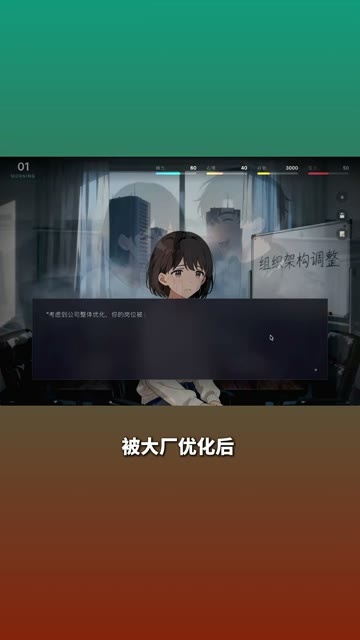
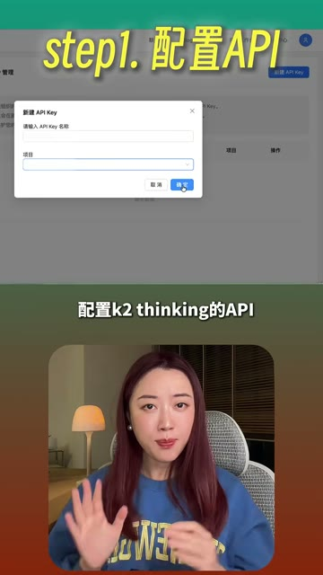
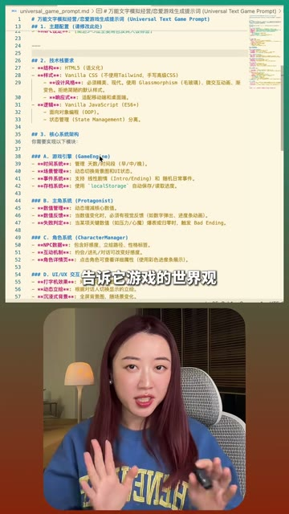
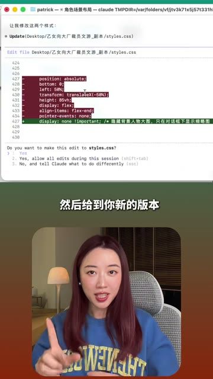
短视频每 1 秒、常规视频每 2 秒、超长视频每 3 秒取一帧。
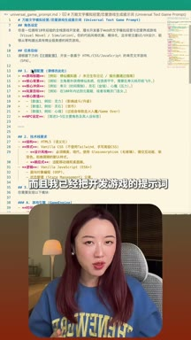
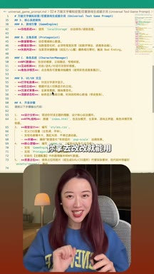
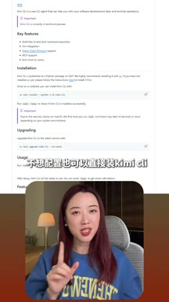
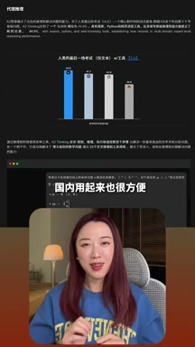
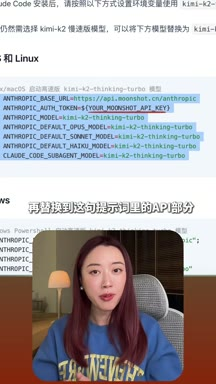
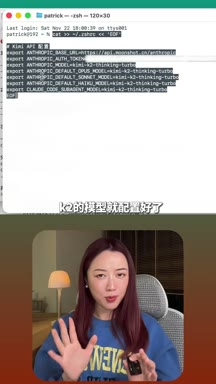
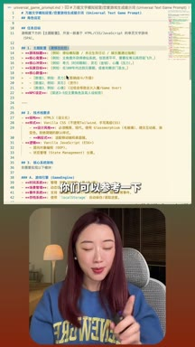
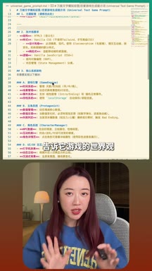
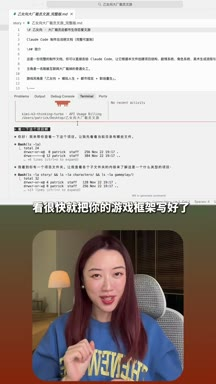
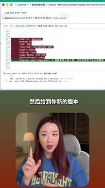
小红书官方 zh-CN 字幕 · 32 段 · 802 字。字幕只记录声音；工具名、界面文字和结果含义必须结合上方视觉知识地图复核。
被大厂优化后，我和搞ai的算法在一起了，这不是gemini三做的
是我用cloud cord开发的乙女文游
全程只用了三个小时，不写一行代码
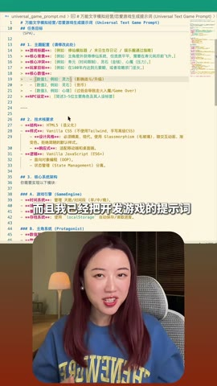
而且我已经把开发游戏的提示词整理成为了模板
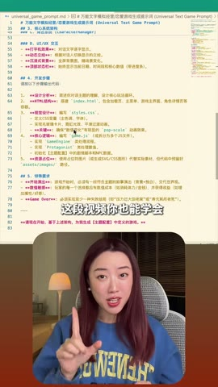
你拿去改改就能用，这段视频你也能学会
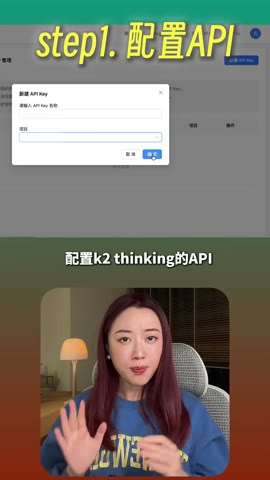
首先我们需要给cloudcode配置k二dinkino api
你没有装cloudcode可以把这段提示词发给终端
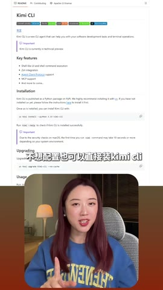
就能一键安装，不想配置也可以直接装kimi颗粒
这是一个能边思考边行动的有agent能力的模型
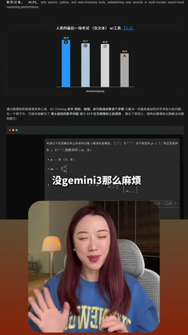
国内用起来也很方便，没有正面的三m版本
安装好了以后我们来到kimi开发者平台，在这里获取一个api
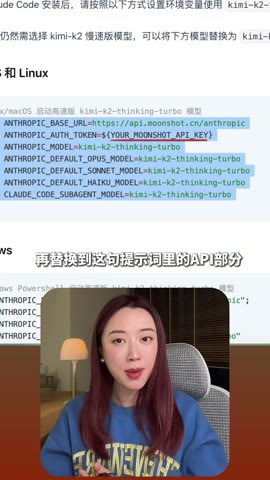
复制好再替换到这句提示词里的api部分，再把这段提示词发给终端
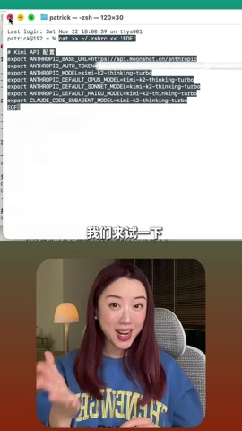
Care的模型就配置好了，我们来试一下看，恭喜你
成功运行了cloud code现在可以直接给他发需求了，这是我的提示词
你们可以参考一下，大概的信息就是告诉他游戏的世界观，主角剧情玩法
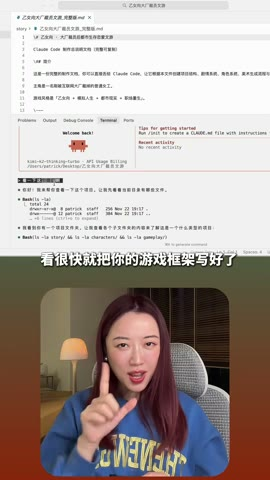
数值等等看，很快就把你的游戏框架写好了
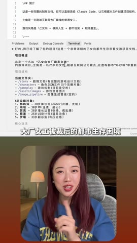
主题就是大厂女工被裁后的都市生存困境，有这么些个男性角色
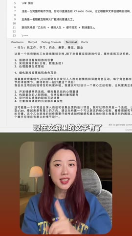
核心数值也设计好了。现在文游里的文字有了
但还缺少很多图片，尤其几位角色的形象，简直就是游戏的灵魂
其实这个也很好解决，你自己动手跑了放在文件夹里
然后告诉crowd code在文件夹放了美术资产，让他自己去找并放在游戏里
很快他就搞定了，来我们打开这个预览看一下，嗯，有点那意思了
而且这些对话设计都是cloud code和k二自己去写的，我每句都认真看了
人物之间的交流非常自然，有生活气息，有情绪
没有deep seek那种声音感，我觉得吧，比大部分的编剧都写得好
但现在的布局我不太喜欢
同样你告诉cloud code布局应该怎么改，它就会去再跑一次代码
然后给到你新的版本。改完以后效果就好多啦
是不是超级简单，不管你是想做职场逆袭，还是古风穿越，或者是悬疑解谜
用这套方法和提示词，就算你不懂游戏开发
不懂代码，不懂ai就说大白话，也能拥有自己的独立文，由
需要文档的朋友来找我要
视频展示作者案例，不能代表普通用户三小时内稳定完成；API费用、安装失败、代码维护和美术版权未完整说明。自动字幕中的 Claude Code、Kimi 与模型名称需复核。
打开小红书原帖 ↗